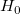
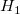
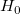
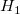
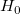
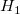
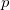
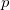

/math-9b0b09d3b8160549d46206793139aacb.png "\{x_i,y_i\}\,\!") 、
、 /math-6b80d670336d4b43b32dbd006770a4f1.png "i=1,2,\ldots ,n") とします。帰無仮説  は、これら標本の中央値が等しいです。対立仮説は 片側または両側にすることができます(下記参照)。次のように計算できます。
とします。帰無仮説  は、これら標本の中央値が等しいです。対立仮説は 片側または両側にすることができます(下記参照)。次のように計算できます。
対応のある標本の符号検定は、2つの対応した標本の対のスコア間の中央値の差を検定します。
2つの対応した標本を、 とします。帰無仮説  は、これら標本の中央値が等しいです。対立仮説は 片側または両側にすることができます(下記参照)。次のように計算できます。
/math-9fe1e9487c4a538f98d385e390785b8d.png "S\,\!") は、対応する標本の数なので
は、対応する標本の数なので/math-855d732beda343c0b8146b8c5b8ff61e.png "x_i<y_i\,\!") です。
です。/math-58a5f6a471c6abd9f79b3186ef729fb3.png "n_i\,\!") の紐づけされていないペア数はです。に対応する下側の確率
の紐づけされていないペア数はです。に対応する下側の確率/math-c0f582773fdbd168bbab09a1e6159c46.png "p\,\!") です。(上側または両側に対しては、補数を使うことができます。) は、値を観測する確率(の場合)または値 を観測する確率( の場合)です。
です。(上側または両側に対しては、補数を使うことができます。) は、値を観測する確率(の場合)または値 を観測する確率( の場合)です。 /math-544f6d19ae2c031bad897e04e59a20a5.png "H_0 \,\!") が真となるような
が真となるような/math-966df41aeb4cf87c7a1ea63e31df0914.png "S=\frac 12n_1") の場合、 となります。
の場合、 となります。選択されたサイズ /math-4bc6c42bbabe567d1f2516326e52b775.png "\alpha \,\!") での有意差検定が実行されます。 (は、 を棄却する確率です。( が真のとき。)通常 は、0.05 や 0.01のように小さな値となります。)の戻り値は、以下のようなさまざまな対立仮説に対する中央値の差についての有意差検定を実行します。
での有意差検定が実行されます。 (は、 を棄却する確率です。( が真のとき。)通常 は、0.05 や 0.01のように小さな値となります。)の戻り値は、以下のようなさまざまな対立仮説に対する中央値の差についての有意差検定を実行します。
/math-bfb6488d6c250ac5aeed1bbf139baaa5.png "y\,\!") の中央値は、の場合棄却されます。の中央値は、の場合棄却されます。の中央値は、
の中央値は、の場合棄却されます。の中央値は、の場合棄却されます。の中央値は、/math-f17d940553818fee4f08170e90217c63.png "p<\alpha\,\!") の場合棄却されます。
の場合棄却されます。このアルゴリズムの詳細は、nag_sign_test (g08aac)をご覧下さい。